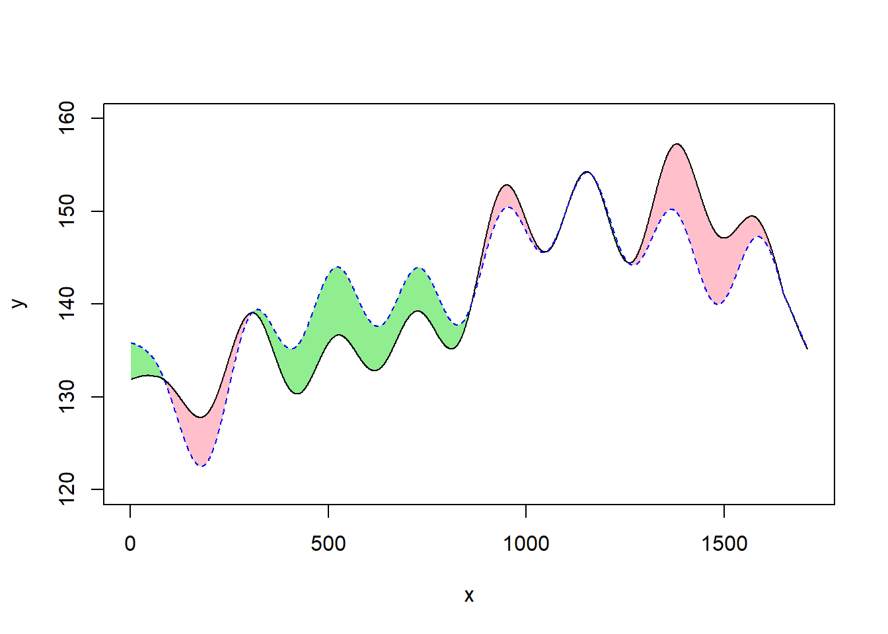

##多边形涂色
y <- read.csv("E:\\training\\zs1.csv")
y_green <- c(0, apply(y[, 2:3], 1, max), 0)
y_pink <- c(0, y$y2, 0)
y_white <- c(0, apply(y[, 2:3], 1, min), 0)
x <- c(y$x[1], y$x, y$x[nrow(y)])
plot(y$x, y$y2, type="n", ylim = c(120, 160), xlab = "x", ylab = "y")
polygon(x = x, y = y_green, col = "lightgreen", border = NA)
polygon(x = x, y = y_pink, col = "pink", border = NA)
polygon(x = x, y = y_white, col = "white", border = NA)
lines(y$x, y$y2)
lines(y$x, y$y1, lty = 2, col="blue1")
box()